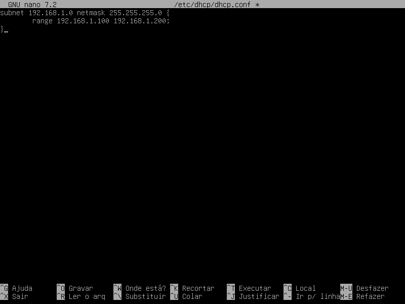

DHCP
Instalação
Debian Instale o dhcp server com o comando:
apt-get install isc-dhcp-serve
Edite o arquivo /etc/default/isc-dhcp-server colocando a interface de rede na qual o dhcp server vai prestar o serviço alterando a linha:
INTERFACESV4="" para INTERFACESV4="interface" (onde a interface pode ser eth0, eth1, ...) caso seja mais que uma separe-as por espaço ou INTERFACESV6="" se for IPv6 Após editar o arquivo, salve-o e feche-o.
Para o serviço funcionar corretamente edite o arquivo /etc/dhcp/dhcpd.conf ou dhcpd6.conf se for IPv6, abaixo segue um exemplo:
default-lease-time 600;
max-lease-time 7200;
option subnet-mask 255.255.255.0;
option broadcast-address 192.168.2.255;
option routers 192.168.2.254;
option domain-name-servers 192.168.2.1, 8.8.8.8;
subnet 192.168.2.0 netmask 255.255.255.0 {
range 192.168.2.2 192.168.2.20;
}
Após editar o arquivo, salve-o e feche-o.
Inicie o serviço com o comando:
service isc-dhcp-server start
Caso não tenha errado na sintaxe o serviço iniciará normalmente ou apresentará uma mensagem de erro.
Arquivo onde pode ser localizado qual IP foi atribuído a qual MAC Address:
/var/lib/dhcp/dhcpd.leases
Configuração
Incluir o(s) nome(s) e o conteúdo do(s) arquivo(s) de configuração.
- Distribuir um intervalo (range em inglês) de endereços IP; (15 pontos)

- Reservar 2 endereços (IP fixo) fora do intervalo do item anterior. (5 pontos)
Teste
service isc-dhcp-server restart